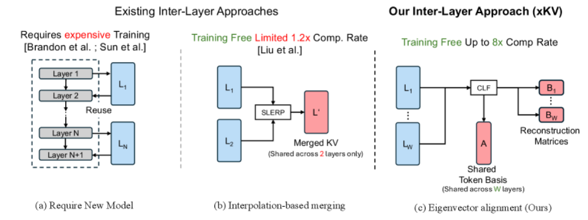

Why it matters왜 중요한가
The redundancy isn't between tokens of adjacent layers — it's in the subspace they live in.
이웃 레이어의 중복성은 토큰끼리에 있는 게 아니라, 그들이 사는 '부분공간'에 있다.
For long-context LLMs the KV-cache memory grows linearly with sequence length and becomes the throughput bottleneck. Prior cross-layer methods either rewrite the architecture (expensive pretraining) or merge adjacent layers' tokens assuming high cosine similarity — which xKV shows is simply false. The authors instead measure Centered Kernel Alignment (CKA) and find that, even when individual token vectors diverge, the dominant left singular vectors are shared across layers. That means one low-rank basis can represent several layers at once, far more compactly than per-layer SVD — and as a post-training, plug-and-play step.
긴 문맥 LLM에서 KV-cache 메모리는 시퀀스 길이에 비례해 커져 처리량 병목이 된다. 기존 cross-layer 방식은 아키텍처를 바꾸거나(비싼 사전학습), 코사인 유사도가 높다고 가정해 이웃 레이어 토큰을 병합하는데 — xKV는 이 가정이 거짓임을 보인다. 대신 Centered Kernel Alignment(CKA)를 측정해, 개별 토큰 벡터는 갈라져도 지배적 좌특이벡터는 레이어끼리 공유됨을 발견한다. 즉 하나의 저랭크 기저로 여러 레이어를 한꺼번에 표현할 수 있고, 이는 레이어별 SVD보다 훨씬 압축적이며 재학습 없는 plug-and-play 단계로 적용된다.

By the numbers핵심 숫자
(88.50% vs 91.89% baseline, RULER)기본 KV 압축
(88.50% vs 베이스라인 91.89%, RULER)
(xKV-SR @ 122k context)End-to-end 처리량
(xKV-SR @ 122k 문맥)
(xKV 8× + 4-bit RTN)총 압축률
(xKV 8× + 4-bit RTN)
(vs FlashAttention-2)어텐션 연산 가속
(FlashAttention-2 대비)
(accuracy saturates by W=8)레이어 윈도우 크기
(W=8에서 정확도 포화)
(of prefill @ 256k)온라인 SVD 오버헤드
(256k prefill 대비)
Results — beating SVD, eviction, and prior cross-layer결과 — SVD·eviction·기존 cross-layer를 능가
| Method | Compression | Avg. Acc. | Δ vs base |
|---|---|---|---|
| Single SVD | 8.03× | 45.71 | −46.18 |
| MiniCache | 1.30× | 45.04 | −46.85 |
| KIVI-2 | ~8× | 86.87 | −5.02 |
| xKV | 8.03× | 88.50 | −3.39 |
| xKV + 4-bit RTN | 25.6× | 87.64 | −4.25 |
| xKV-SR | 5.35× | 89.69 | −2.20 |
In one diagram한 장의 그림
Idea: align singular vectors, share one basis아이디어: 특이벡터를 정렬하고 기저를 공유
Cross-Layer Factorization (CLF)
Group N layers into windows of size W. Concatenate the W caches horizontally into one L×(W·d) matrix and run a single rank-r SVD → a shared token basis A (L×r) plus W tiny reconstruction matrices Bℓ (r×d). Storage drops from O(W·L·d) to O(L·r + W·r·d). A custom randomized SVD with shifted Cholesky-QR keeps it cheap online.
N개 레이어를 크기 W 윈도우로 묶는다. W개 캐시를 가로로 이어 L×(W·d) 행렬로 만들고 단 한 번의 rank-r SVD → 공유 토큰 기저 A(L×r)와 작은 복원 행렬 Bℓ(r×d) W개. 저장량은 O(W·L·d)에서 O(L·r + W·r·d)로 감소. shifted Cholesky-QR 기반 무작위 SVD로 온라인 비용을 낮춤.
Selective Reconstruction (SR)
Dense reconstruction X̂=A·B scales with L and becomes compute-bound. SR exploits attention sparsity: a landmark-guided chunk selector picks a small set of relevant token indices and reconstructs only those rows — A[S,:]·B. With |S|≪L, decode cost is constant in sequence length, enabling full on-GPU inference (xKV-SR).
밀집 복원 X̂=A·B는 L에 비례해 연산 병목이 된다. SR은 어텐션 희소성을 활용: landmark 기반 청크 선택기가 관련 토큰 인덱스 소수를 고르고 그 행만 복원 — A[S,:]·B. |S|≪L이므로 디코드 비용이 시퀀스 길이와 무관해져, 전부 GPU에서 추론(xKV-SR)이 가능해진다.
How it works어떻게 작동하나
- Diagnose with CKACKA로 진단Token-wise cosine similarity across layers is low, but CKA between layer caches is high — proving the dominant singular vectors are aligned, so a shared basis is justified.레이어 간 토큰별 코사인 유사도는 낮지만 캐시 간 CKA는 높다 — 지배적 특이벡터가 정렬돼 있음을 증명, 공유 기저를 정당화.
- Group & concatenate묶고 연결Partition layers into windows of W=4; concatenate each window's KV caches horizontally during prefill.레이어를 W=4 윈도우로 분할; prefill 중 각 윈도우의 KV 캐시를 가로로 연결.
- One SVD → A and B한 번의 SVD → A와 BRun a rank-r randomized SVD on the concatenation to get the shared basis A and per-layer reconstruction matrices B (head-wise for GQA). Store these instead of full caches.연결 행렬에 rank-r 무작위 SVD를 적용해 공유 기저 A와 레이어별 복원 행렬 B(GQA는 헤드별)를 얻고, 전체 캐시 대신 이것을 저장.
- Selective decode선택적 디코드At each step, select query-relevant token chunks and reconstruct only those rows — constant-cost attention, up to 3.5× faster, full on-GPU.매 스텝마다 쿼리 관련 토큰 청크를 골라 해당 행만 복원 — 상수 비용 어텐션, 최대 3.5× 가속, 전부 GPU 상.
What to take away그래서, 가져갈 것
8× compression, near-baseline accuracy. And it composes — stack 4-bit quantization for 25.6× total, or 32× at 3-bit with moderate loss.
8× 압축에 거의 무손실. 게다가 결합 가능 — 4-bit 양자화를 얹어 총 25.6×, 3-bit면 적당한 손실로 32×.
The right similarity metric matters. Token cosine says "no redundancy," CKA says "lots." Measuring subspaces instead of vectors flips the whole approach.
올바른 유사도 척도가 핵심. 토큰 코사인은 "중복 없음", CKA는 "많음"이라 말한다. 벡터 대신 부분공간을 재면 접근법이 통째로 뒤집힌다.
Plug-and-play & general. No retraining; works on GQA and even MLA (DeepSeek), further compressing an already-latent cache by 3–3.5×.
Plug-and-play & 범용. 재학습 불필요; GQA는 물론 MLA(DeepSeek)에도 작동해 이미 잠재화된 캐시를 3–3.5× 추가 압축.
Robust in multi-turn. Unlike eviction (SnapKV/PyramidKV), which drops context after turn 1, xKV preserves long-term state across turns.
멀티턴에 강건. 첫 턴 이후 문맥을 잃는 eviction(SnapKV/PyramidKV)과 달리, xKV는 턴을 가로질러 장기 상태를 보존.